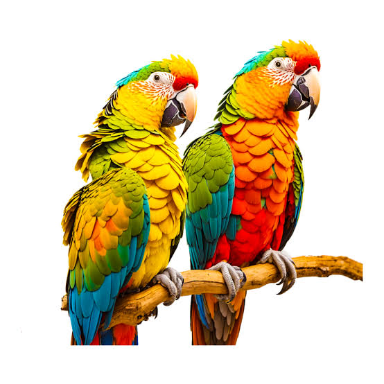
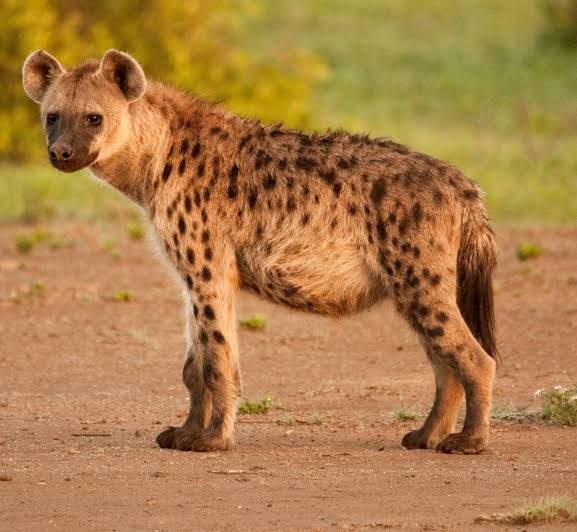
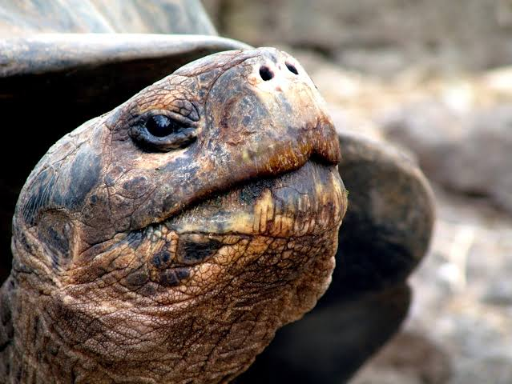

|  |
Los loros (Psittacoidea) son una superfamilia del orden Psittaciformes, con un total de 369
especies.1 Los loros típicos son más numerosos y están más extendidos que las otras superfamilias
de psitaciformes, las cacatúas y los escasos y confinados loros de Nueva Zelanda, ya que tienen
representantes en América, África, Asia y Oceanía (desde Australia hasta la Polinesia) |
|  |
Los hiénidos son una familia de mamíferos carnívoros pertenecientes al suborden de los feliformes.
Es la familia menos numerosa en su orden, y una de las más pequeñas dentro de los mamíferos. |
|  |
Se denomina Complejo Chelonoidis nigra a un complejo de especies que engloba un total de 10 especies
de tortugas terrestres del género Chelonoidis, las que son conocidas comúnmente como tortugas de las
Galápagos o tortugas gigantes de las islas Galápagos. |
 |
El león es un mamífero carnívoro de la familia de los félidos y una de las cinco especies del género
Panthera. |
 |
Los rinocerótidos, conocidos con el nombre de rinocerontes, son una familia de mamíferos
placentarios del suborden ceratomorfos perteneciente al orden de los perisodáctilos |